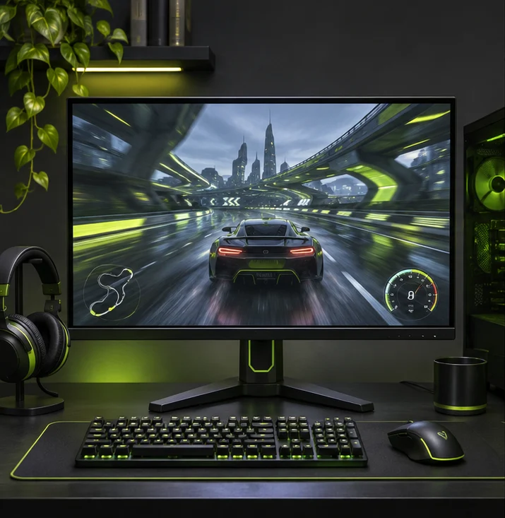
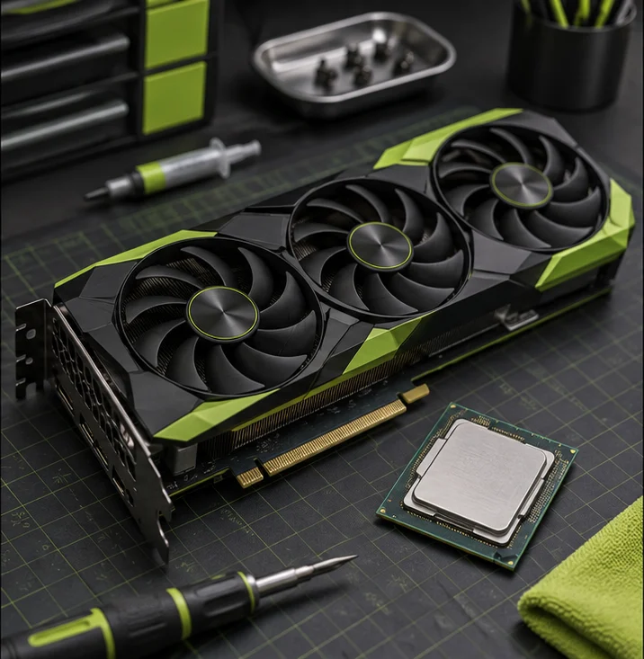
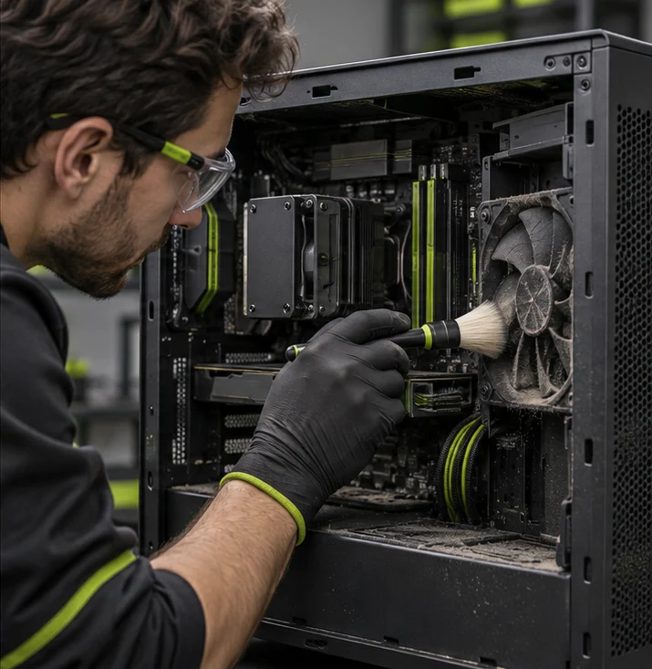

Editar vídeo
Corte, organize e exporte seus vídeos com editores gratuitos.
Shotcut ↗ · Kdenlive ↗FERRAMENTAS PARA PC
Simule seu desempenho em jogos, planeje tarefas em aplicativos e calcule quanto custa cuidar do seu PC.
Escolha as peças, o jogo e os ajustes gráficos.
DESEMPENHO ESTIMADO
Modelo aproximado para resolução nativa, com ray tracing e geração de quadros desligados. Mapas, atualizações e temperatura podem mudar o resultado.
Escolha pelo que você quer fazer.
Corte, organize e exporte seus vídeos com editores gratuitos.
Shotcut ↗ · Kdenlive ↗Grave a tela ou faça transmissões ao vivo.
OBS Studio ↗Confira seu processador, placa-mãe e memória RAM.
CPU-Z ↗COMPARAÇÃO
Preencha os dois tempos para calcular a diferença.
Use o mesmo arquivo e as mesmas configurações do aplicativo nas duas medições.
Teste uma troca de peça usando o mesmo jogo e os ajustes da calculadora.
ANTES E DEPOIS
A comparação estima FPS. Confira a compatibilidade das peças antes de comprar.
Selecione os serviços para somar os valores de referência de Brasília, DF.
TOTAL DE REFERÊNCIA
Selecione um serviço para começar.
Valores consultados em 18/11/2026. Peças, licenças e deslocamento podem ser cobrados à parte. O valor final depende do prestador.
Entenda o que cada ferramenta mostra e como usar os resultados.

FPS é o número de quadros que o PC gera por segundo. Hz é a frequência com que o monitor atualiza a imagem. Compare resoluções usando o mesmo jogo e preset. A faixa exibida é uma estimativa.

Simule uma troca de CPU ou GPU mantendo o mesmo jogo e preset. Para comparar aplicativos, execute a mesma tarefa nas duas máquinas, com o mesmo arquivo e os mesmos ajustes. Na aba Aplicativos, informe os dois tempos medidos.

Marque os serviços que você precisa para ver o total estimado. Os valores de Brasília têm data e fonte na aba Orçamento. Confirme com o técnico se peças, licenças e deslocamento entram no preço.
Encontre programas nas páginas oficiais e guarde seus próprios atalhos.
Os links que você adicionar ficam neste navegador.
CÓDIGO ATIVADO
Jogos e ferramentas grátis com download nos sites oficiais.
Corrida de kart de código aberto.
Download oficial ↗Estratégia em tempo real inspirada na Antiguidade.
Download oficial ↗Editor de vídeo gratuito e de código aberto.
Download oficial ↗